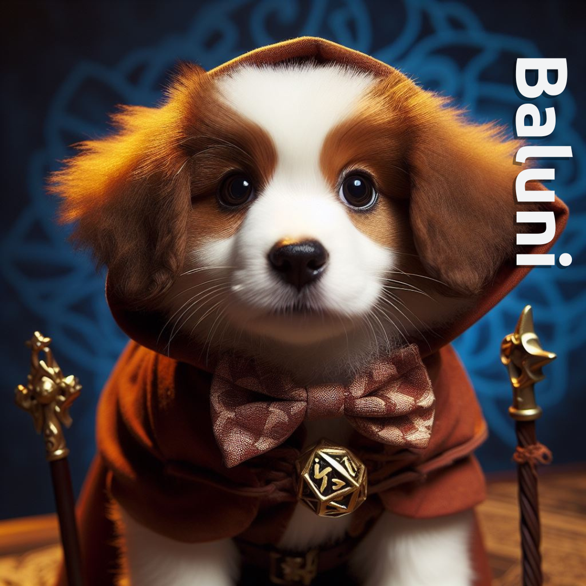
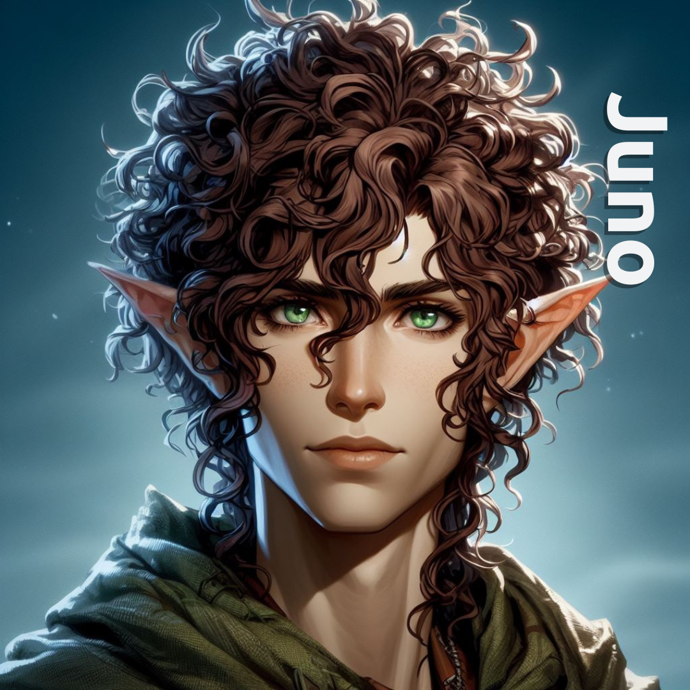
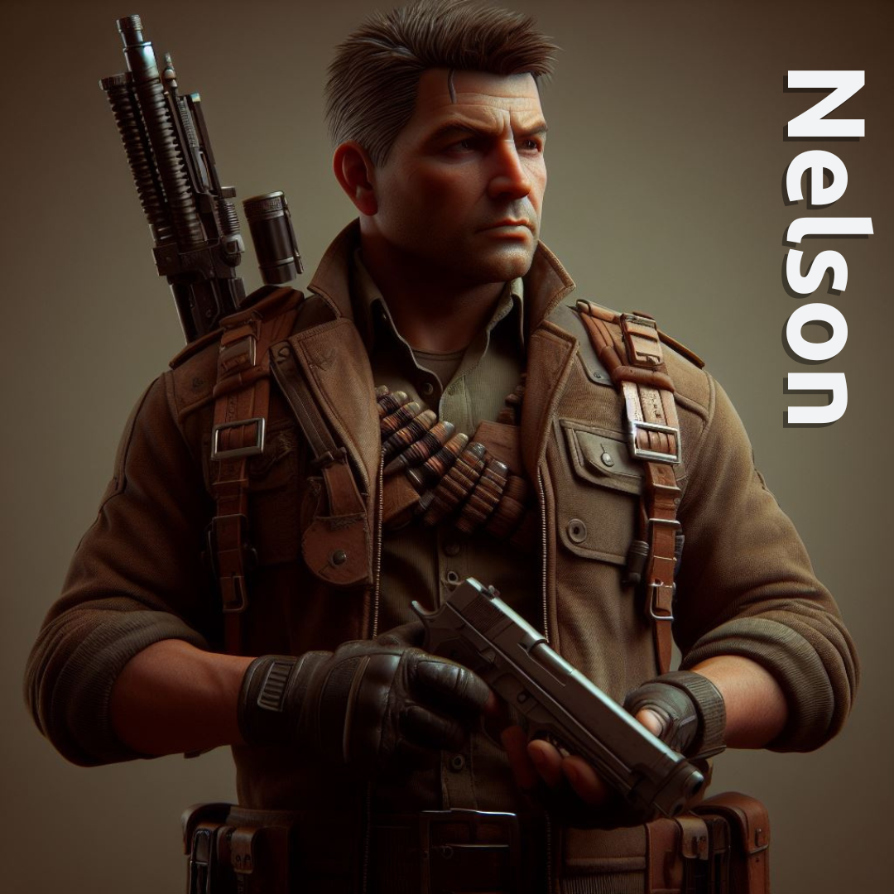
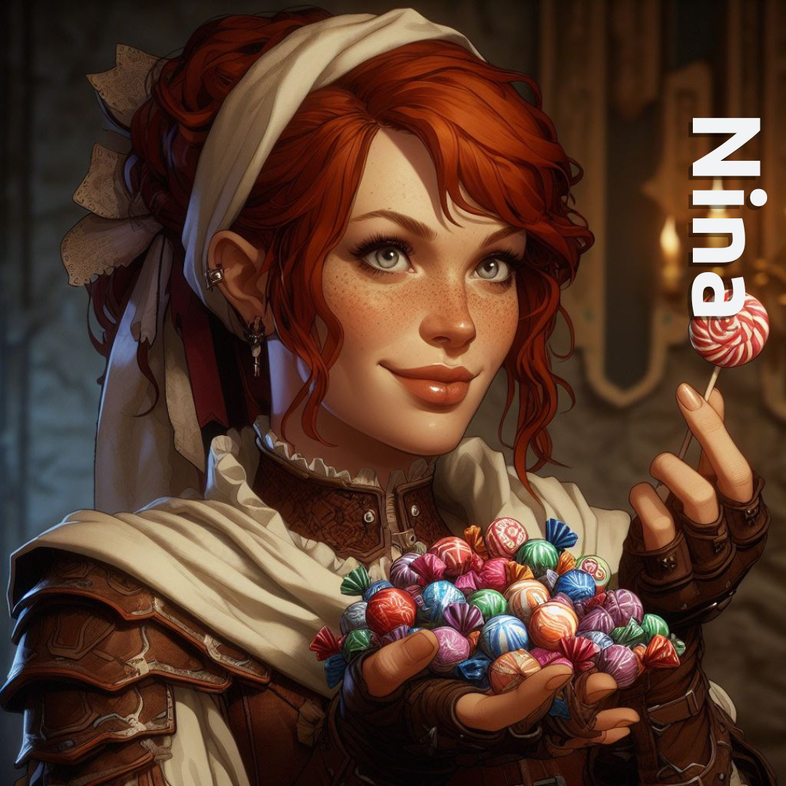
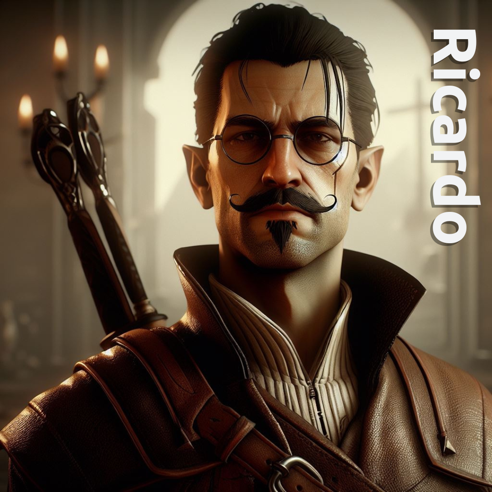
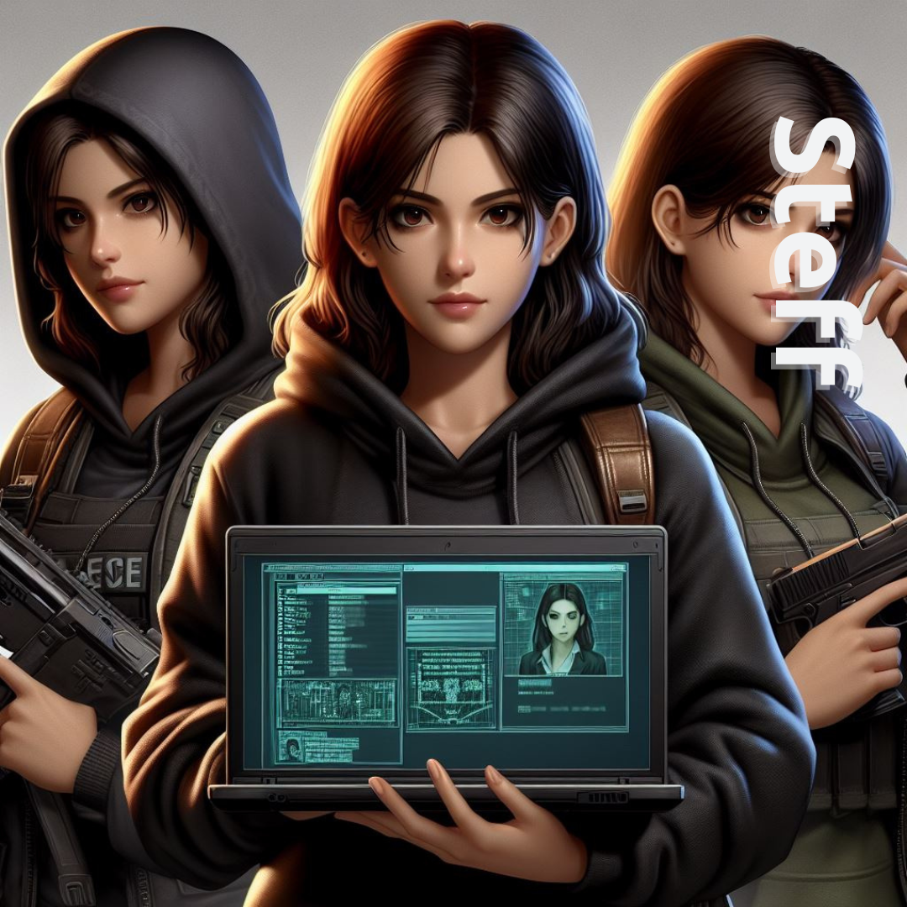

PERSONAGENS
Esses são os principais heróis da missão, cada um trazendo consigo
habilidades únicas e personalidades cativantes. Embarque nesta
jornada épica em Aldoria, um reino de magia e mistério, onde
forças sombrias ameaçam desencadear o caos. Enquanto os heróis
se aventuram por terras desconhecidas, eles enfrentarão desafios
inimagináveis, explorando antigas masmorras, decifrando enigmas
mágicos e desvendando segredos há muito perdidos. Cada personagem
é uma peça crucial no quebra-cabeça que é a busca pela essência
mística, e juntos formam um grupo formidável determinado a salvar
Aldoria da iminente escuridão que se avizinha.

Baluni - A Metamorfa Encantada
Característica:
Baluni é uma personagem única
em nossa jornada por Aldoria. Embora possua a capacidade
mágica de se transformar em diversas formas, desde animais
majestosos até outras figuras humanas, ela escolhe se
manifestar como uma adorável cachorrinha. Seu dom de
metamorfose não apenas acrescenta uma camada de mistério
à equipe, mas também se revela fundamental nas situações
mais desafiadoras.
Baluni traz consigo a sabedoria e a
versatilidade de suas múltiplas formas, tornando-se uma
aliada essencial na busca pela essência mística.
Sua presença, muitas vezes subestimada, revela um poder
inigualável e uma lealdade que transcende as barreiras das
aparências.
Juno - O Elfo Flexível
Característica:
Juno, o elfo ágil e flexível,
é uma presença vibrante em nosso grupo de heróis. Dotado de
cabelos cacheados e olhos verdes penetrantes, Juno não é
apenas um mestre da acrobacia, mas também possui um talento
extraordinário: a habilidade de se comunicar com a natureza
ao seu redor.
Mesmo em meio aos desafios mais árduos, Juno
mantém sua agilidade e graciosidade, muitas vezes
surpreendendo inimigos e aliados com movimentos que desafiam
a gravidade. Sua flexibilidade não se limita apenas ao físico,
pois Juno também é flexível em lidar com as complexidades do reino
de Aldoria, desempenhando um papel vital na busca pela essência
mística.


Nelson - O Atirador Determinado
Característica:
Nelson, o destemido especialista em
armas, é uma figura imponente e crucial em nossa equipe
de heróis. Com seu revólver sempre à mão, ele personifica
a determinação e a habilidade afiada.
Nelson não é apenas um atirador habilidoso, mas também um estrategista astuto,
capaz de enfrentar desafios com precisão cirúrgica.
Sua presença confiante e sua destreza com as armas oferecem
uma vantagem crucial em batalhas intensas. Nelson não hesita
em assumir a linha de frente, tornando-se um pilar de força
na busca pela essência mística, onde sua mira afiada é tão
vital quanto sua coragem inabalável.
Nina - A Encantadora Culinária Mágica
Característica:
Nina, a talentosa doceira, é a mágica adocicada
em nosso grupo de heróis. Sua paixão pela culinária
transcende os limites do comum, pois Nina possui um
dom único: a habilidade de infundir seus pratos com
magia restauradora. Seus doces não apenas encantam o
paladar, mas também possuem propriedades curativas,
proporcionando energia vital aos membros da equipe.
Além disso, Nina utiliza
seu conhecimento culinário para decifrar antigos enigmas
e criar poções mágicas que desempenham um papel crucial
na jornada. Seja na preparação de iguarias ou na
restauração de energias, Nina é a alquimista de sabores
que enriquece nossa busca pela essência mística.


Ricardo - O Guerreiro Imponente
Característica:
Ricardo, o guerreiro imponente, é a personificação da
força e liderança em nossa equipe de heróis. Com sua
presença majestosa e habilidade hábil com a espada,
ele se destaca como um pilar de coragem em nossas batalhas.
Contudo, além de sua destreza no campo de combate, Ricardo
desempenha um papel essencial como estrategista perspicaz.
Sua mente afiada e discernimento tático contribuem
significativamente para as decisões do grupo.
A tenacidade de Ricardo é um alicerce vital na busca pela
essência mística, onde sua coragem inabalável serve como
farol, guiando a equipe através das sombras que se erguem
sobre Aldoria.
Steff - A Mente Tecnológica Astuta
Característica:
Steff, a hacker astuta, é a mente tecnológica em nosso grupo de
heróis. Com olhos penetrantes fixados na fronteira entre magia e
tecnologia, Steff manipula códigos e algoritmos com maestria,
desvendando segredos ocultos e fortalecendo nossa equipe com suas
habilidades únicas. Sua destreza em invadir sistemas e decifrar
enigmas eletrônicos é tão crucial quanto sua astúcia estratégica.
Enquanto exploramos Aldoria, Steff emerge como a chave para
desvendar mistérios complexos e enfrentar desafios modernos.
Sua presença, envolta em uma aura de conhecimento inexplorado,
torna-se um elemento vital em nossa busca pela essência mística
que molda o destino do reino.
